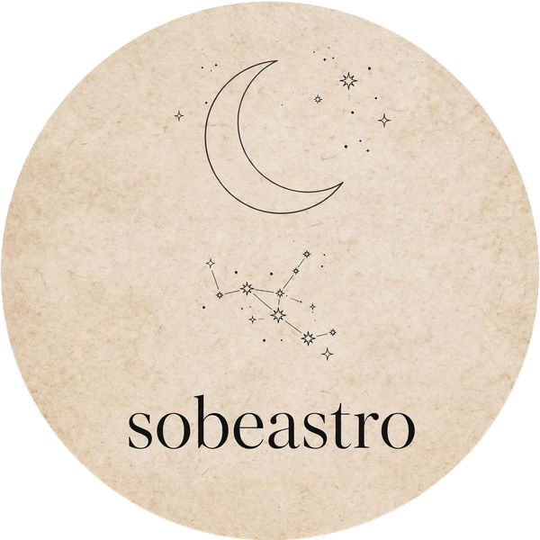

Ücretsiz Doğum Haritası Yorumu
Geçmiş hayatında kimdin? Haritandaki en belirgin işaret ne? Hangi döngünün içindesin? ✦
Doğum saatimi bilmiyorum
Bilgilerin yalnızca hesaplama için kullanılır.
Hayatının hangi alanında tekrar eden bir döngü hissediyorsun?
Bazı yerlere, insanlara ya da zamanlara açıklayamadığın bir yakınlık duyar mısın?
Şu an en çok neye ihtiyacın var?
Gökyüzü hesaplanıyor…
Bu yorum ruhsal (karmik) astroloji geleneğine dayanır; eğlence ve iç gözlem amaçlıdır, sağlık ya da gelecek hakkında kesin bilgi vermez.